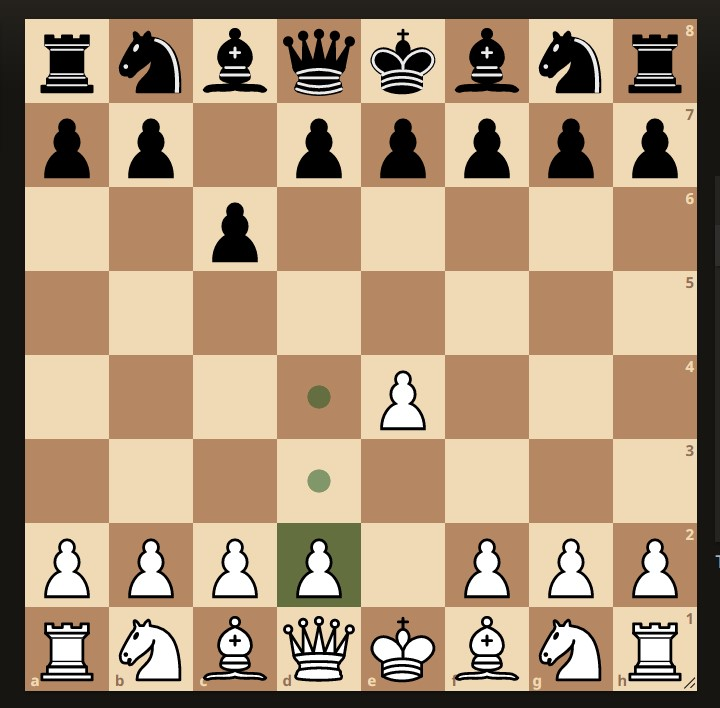
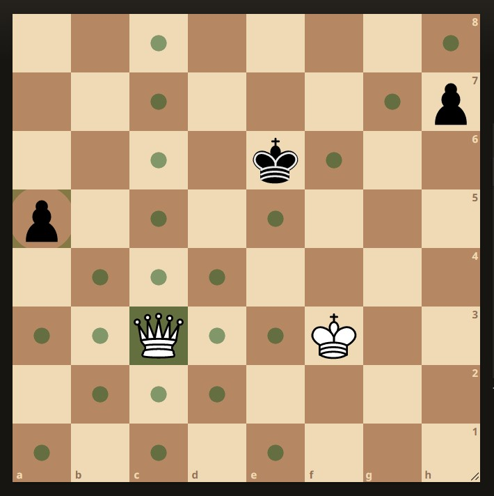
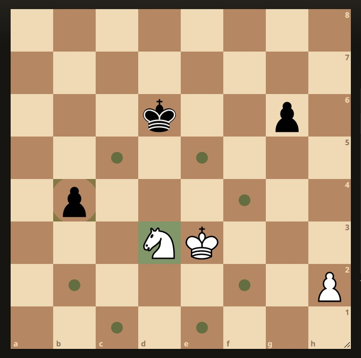
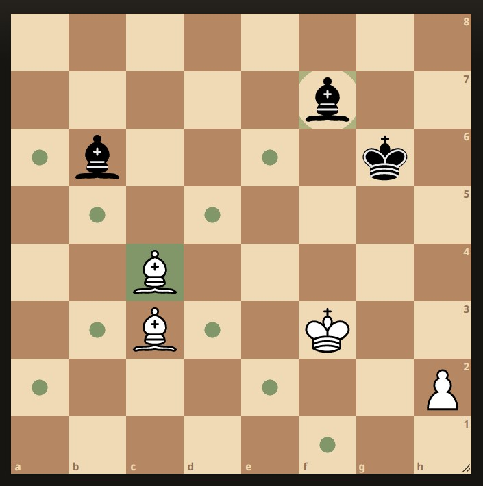
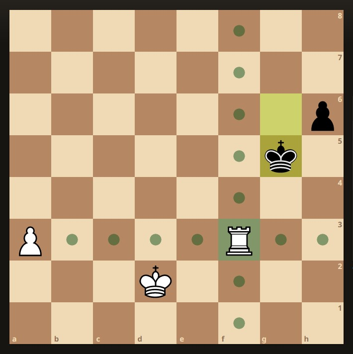
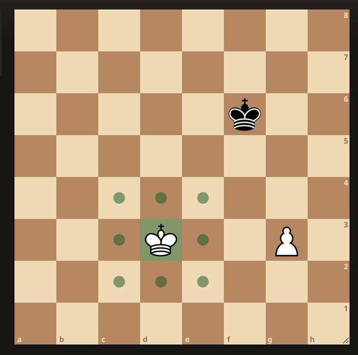
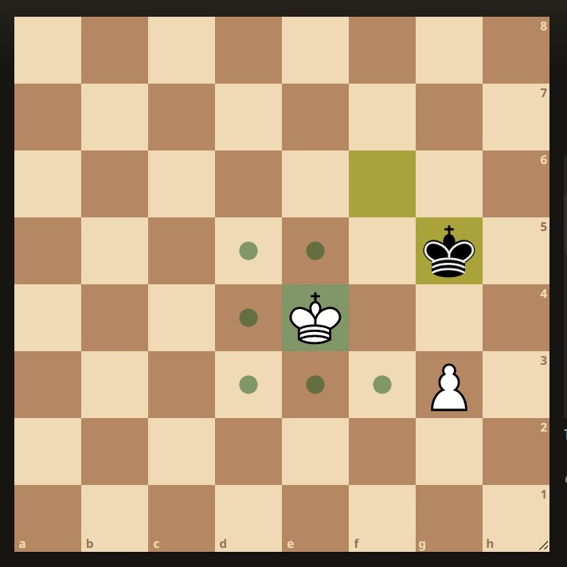

Conocimientos Básicos del Juego
Posición Inicial de las Piezas en el Juego
En esta sección presentamos la posición de las piezas en el tablero en su ubicación inicial al comienzo del juego, puedes notar que el tablero está numerado en filas que se enumeran del número 1 al número 8, al igual que las colunnas están seriadas con las letras que van desde la letra "a" hasta la "h". Así puedes aprender el movimiento de las piezas cuando quieras leer una partida de ajedrez.
La enumeración del tablero comienza en la base inferior izquierda con el primer cuadro definido como "a1" y subiendo por la fila "a" llegas hasta "a8" que está ubicado en la parte superior izquierda. Así puedes hacerlo con todas las letras.
Entonces la notación de los movimientos de las piezas es la siguiente de acuerdo a la pieza: En el caso de los peones solo se indica la casilla a la que se va a mover por ejemplo "e4" y así se indica el movimiento de todos los peones.
En el caso de las piezas mayores El rey se indica con la letra "K" (nombre dado en idioma inglés de las piezas), la reyna se indica con la letra "Q", los alfiles se indica con la letra "B", el caballo se menciona con la letra "K" y las torres se denominan con la letra "R".
El movimiento de los Peones
En este párrafo hablamos del movimiento de los peones. Las características principales son que solo avanzan por la colunma en que se encuentran, no pueden retroceder, otra característica es que atacan a los cuadros en diagonal que tienen hacia adelante y a las piezas que ocupen esos lugares.
La importancia principal de los peones es que avanzando hasta la casilla número 8 en caso de ser de color blanco y casilla 1 en caso de ser de color negro pueden coronar y convertirse en una pieza mayor pudiendo ser una torre, el caballo, un alfil o la pieza con mayor poder que es una reyna. "No pueden coronar a un Rey".
Como se puede ver en la figura el primer movimiento de un peón puede ser avanzando dos cuadros de un solo movimiento del poeón blanco o avanzando un solo cuadro como el peón negro, a partir del segundo movimiento solo pueden avanzar de un solo cuadro.
El movimiento de las Reynas
La reyna es la pieza con mayor poder de todas las piezas del juego por la mayor cantidad de movimentos posibles que puede hacer ,como podemos observar en la figura la reyna, en ésta posición, puede atacar 22 casillas y/o piezas que se encuentren en las casillas marcadas con el círculo en el tablero.
Por la cantidad de posibilidades de movimeiento que tiene la reyna es la pieza con mayor dificultad de preveer las jugadas que puede hacer, ya que puede atacar y defender diversos cuadros del tablero por lo que representa una amenaza a las piezas indefensas del oponete.
El valor que la reyna representa equivale a las dos torres en ciertos casos, siempre que exista desorden de piezas del oponente debido a nuestro juego, la reyna es superior. También representa tres piezas entre alfiles y caballos, ésto demuestra el valor que tiene la reyna en el juego.
La reyna se puede mover en linea recta por las filas y columnas y también se puede mover por las diagonales y no puede saltar las piezas.
El movimiento de los Caballos
El movimiento de los caballos representa para los jugadores principiantes una pieza que deben prestar una mayor atención debido a que su movimiento es distinto al de las demás piezas.
Para mover el caballo se deben contar dos casillas hacia los cuatro lados y ver las casillas que están a los costados de la segunda casilla , para entender un poco más el movimiento podemos decir que forma una letra "L" como podemos ver en la figura los cuadros marcados con un círculo. En total solo puede atacar 8 cuadros y/o piezas que se encuentren en esos cuadros.
Las características más importante del movimiento de los caballos es que pueden moverse saltando por encima de las piezas ya sea del mismo jugador como del jugador opoente. En su primera jugada puede saltar por encima de sus propios peones.
El movimiento de los Alfiles
El movimiento de los alfiles en el tablero es a través de las diagonales como podemos observar en la figura, ataca a todos los cuadros y/o piezas que se encuentren en los cuadros marcados con un círculo.
Hay dos alfiles por cada jugador tienen la particularidad que uno de los alfiles se mueve por los cuadros blancos y el otro se mueve por los cuadros negros.
Los alfiles no pueden saltar por encima de las piezas tanto rivales como del mismo jugador, la falta de un alfil por parte de un jugador genera una debilidad de las casillas del color que falta el alfil por lo que puede ser aprovechado por su rival, ya que no podrá cuidar los cuadros de ese color.
El movimiento de las Torres
El movimiento de las torres en el juego es bastante simple de ver ya que se muven por el tablero a través de las filas y columnas en forma recta como se muestra en la figura.
La torre ataca todos los cuadros y/o piezas del oponente que se encuentren en los cuadros con los círculos marcados en el tablero como muestra la imagen.
La torre tiene la capacidad de cortar el camino del rey oponente para poder encerrarlo en un lado del tablero ya que el rey no tiene forma de cruzar por esa fila o columna, ésta pieza, al igual que la reyna, tienen la capacidad de dar jake mate al rey oponente con ayuda de su rey.
Las torres juegan mejor cuando ambas se complementan y están cuidadas una por la otra de ésta forma a la vez que se defienden entre ellas, atacan a cualquier otra pieza y en caso de atacar al rey del openente, pueden dar jake mate.
El movimiento de los Reyes
 El movimiento de los reyes es limitado solo pueden mover un solo cuadro por tiempo en cualquier dirección, siempre que no esté ocupada por otra pieza.
Como podemos observar en la figura de la imagen superior izquierda el rey blanco se encuentra en la ubicación "Kd3" y se puede observar las casillas marcadas con un círculo alrededor del mismo. Éstas son las casillas a las cuales se puede mover.
En la figura superior derecha se puede observar que tiene el movimiento el rey blanco pero como se encuentra cerca del rey negro , el rey blanco no puede ocupar las casillas que están en contacto con el rey negro por lo que tiene menos casillas para poder moverse.
Las características principales de los reyes: Son las piezas a las que se tiene que dar jake mate, ésta es la condición para terminar el juego y darse por ganador de la partida. Los reyes no se pueden atacar mutuamente por lo que necesitan de sus otras piezas para atacar al rey contrario, las demás piezas si pueden atacar al rey siendo la dama la pieza que tiene mayor fuerza para atacar al rey enemigo, siempre acompañada por otra pieza.
El rey puede comer cualquier pieza que no esté defendida ni protegida por otra pieza.